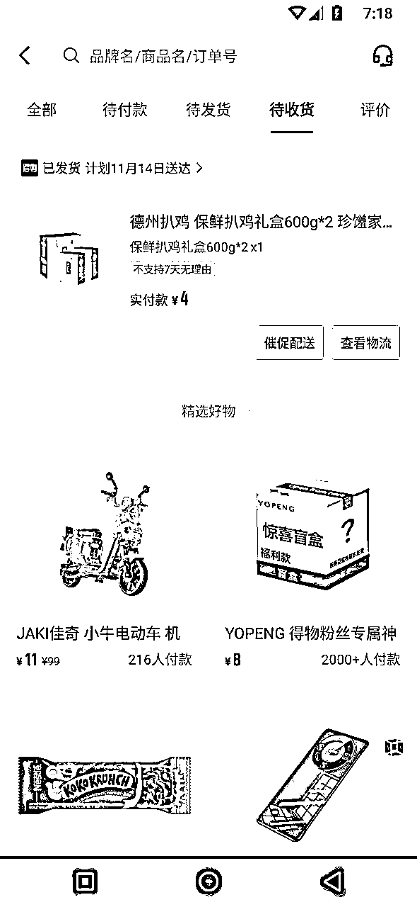

来源：https://udxxg5rx5m.feishu.cn/docx/R1vFd5IsHom16Cxd969cs0rgnXf
声明：本人（生财：施仁）在生财分享的所有，
免费，不带项目，不收徒，不收任何学费。
不管你们是什么渠道联系到我。
咨询或者问问题我都不会收费。
当然如果有什么疑问最好就在文章下面提，
我有空会回复，这样别人有同样的疑问也能在这里找到答案。
无门槛券就是哪怕你买的东西只有50元。你也可以用手里的200元无门槛券去买。
但是不建议这么操作。

得物无门槛优惠券的利润并不低。
可以看下咸鱼目前都是什么价格在出，几乎每张券都是在折损10-35的价格在出售，
先说一下结果，实操如果截止11.21号， 按我之前做的一些项目来对比，只能说并不成功。
幸好活动延期。前面的努力并不算白费。
当时我自己这边做了大概170个号，一部分号领了1-3周优惠券，一部分号活动刚下来就直接死了。
统计下来。成本一共花了大概6000元。
除去一部分优惠券我买了一下东西，其他优惠券共变现18063。
而且这是两个人做下来的收益。几乎精力全在这个项目上，收益并不理想。
好在合作的几个工作室有的情况好一点，报上来的数据算了一下还能分到我手里小两万。
而且这次项目也算是促使我把代理IP研究了一下，
把IP隔离的功能加到我的多账号浏览器软件里。算是一个不错的收获。
现在是项目后期，目前投入了更多精力和成本，改变了玩法形态。一部分账号改为6天一个周期。一部分账号先进行快速的变现操作。
我是10.27号在得物官方群看到了活动，得物主场计划。
这个项目其实就是得物之前 潮流主场计划 的平替，
得物搜索 得物主场计划 ，会有活动页。
点进去，
看一下得物审核需要提交的资料，
活动资格就是需要外站一个500粉的小红书或者万粉的抖音号即可，
提交自己账号资料后得物审核，
如果资格审核通过就可以参加任务获取优惠券。
如果没有这种万粉账号的话也可以去买，单买的话成本150，
避免广告嫌疑我就不在这里再说了，
这篇文章也提到过具体流程，
有兴趣的可以自行研究流程。
活动周期为6周，其中每周都能完成特定任务，领取不同面额的无门槛优惠券。
第一周、第六周都给100元无门槛券。
第二周到第五周每周都给88元无门槛券，
两个月内粉丝涨到100，可以获取200元无门槛券。
粉丝涨到1000，可以获取500元无门槛券。
100*2+88*4+200+500=1252元无门槛券
但我批量操作，从性价比上考虑。500元优惠券放弃。
可以拿100*2+88*4+200=752元无门槛券。
根据我的经验，
一般情况同一批提交的账号，
不通过的会比通过的账号提前1-2天收到消息。
如果提交的账号第三天都没有收到不通过的消息，
那这个号几乎百分百会通过审核。
初期我注册了5个账号，其中3个账号顺利通过了审核，
另外2个账号因未达到活动要求被拒绝。
通过这些测试，我确认该活动操作的可行，于是决定扩大规模。
拉了三个工作室的朋友开始逐渐上号，
10.31号，第一批账号，发布作品后完成了活动，并且也领取100元优惠券，全部没什么问题。
于是开始放大操作，
因为有过批量做号的经验，所以轻车熟路我自己这边先做了40+的号。
为了制作活动所需的短视频，我通过VPN访问油管下载视频素材。
时长全是12小时的，好像油管有时长限制，最多就是12个小时。
之前做项目下载这些作品，vpn成本都下不来，后来自己搭建另一个海外节点，每个月1000G流量。99块一年。
完美解决。教程在这里。
下载下来的视频再通过视频批量分割工具，
十几个小时的视频直接分成每个20秒以上的几千个作品。
足够账号发布。
批量分割工具也是我以前自己项目需要开发的。
感兴趣的我会在文章最后分享出来，
操作起来并不难，把要分割的作品放在一个文件夹，
再新建一个文件夹用来装分割完成的作品，
设置好作品的持续时间，点击开始分割就行了。
界面很粗糙因为是自用的所以不整花里胡哨的。
11.8号，收到工作室那边的消息，发现有号异常了，
因为之前矩阵做这些平台活动，知乎、快手、京东，
没因为IP出过问题，
我并没有意识到得物平台在风控方面的严格，
以为只是偶发性的事故，
可能是发布作品违规导致的。
毕竟这么多账号批量做，
出几个问题算合理。
但是后面几天开始陆续有号异常，
活动完成后优惠券无法领取，
这个时候我立即跟合作的工作室调整策略，
有条件的一机一号，没条件的尽量也把账号分开，减少批量操作风险。
我自己这边着手测试风控的底线。
新注册的账号开始分开操作，流量卡注册，发作品也暂时用手机手动发布。
因为这种账号异常不会有任何提示，只有领优惠券的时候会提示领取失败。
这点就很麻烦，一个账号只有在每周任务做完的时候领优惠券才知道账号有没有问题，
很难测试出具体是哪一步批量操作导致的账号异常，
11.15号，测试了几天，得物在这方面的风控确实严格，没有任何侥幸的空间，必须一机一号操作，
之前是用我自己写的软件批量发布，ip是固定的。
现在这样肯定是不行了。本来想着一个服务器挂几个号发，手里还闲置了四五十台轻量云，
结果那天还没用突然收到消息，服务器都快到期。
再买服务器又要增加成本，而且如果买了服务器，一个服务器挂几个号，
那我手里的号需要同时操作几十台服务器，用软件批量发意义也不大了，
依然增加了不少人工成本。
如果用比特浏览器的环境隔离也不是不行，
但是这样的话我写的全自动批量发布作品又无法使用，只能手动做活动，
正焦头烂额的时候，
突然想到了之前在生财看到毛韩老哥说的自己搭建代理IP。
又回去看了看老哥原本的文章，自己也搜了一些相关资料。
最终还是决定，自己搞个IP池，把浏览器环境隔离的功能加到自己的软件里。
上个月还有生财的朋友找到我说想付费在我写的多账号浏览器增加这个功能，被我给婉拒了，因为我除非是自己有需求，不接付费定制软件这种活。没想到还没过多久，还是自己把这功能乖乖加上去了。
可以说每一次技术能力上的成长都是被自己的项目需求给逼出来的。
写的这个多账号浏览器快一年，视频号、小红书、京东、B站、QQ短视频、快手这些批量自动发布的功能一点一点加上来也都是每个项目需要。
于是又买IP又买服务器，但挂代理IP的时候犯难了，因为我是看过 比特浏览器挂代理的方式，只是单独把浏览器进程挂上了代理，而不是直接电脑挂代理，又查了很多资料，算是把这个问题解决了。
这段看似一笔带过，但实际上又让我花了四天坐电脑前才解决，不停地修BUG做测试。
其实做到这里活动时间已经过去一大半了，对我来说即使项目已经没有希望，我也不觉得有损失。
起码代码能力上又有了一小步的进步。软件增加了代理IP和浏览器伪装，可以给每个账号设置固定的代理和浏览器参数，几乎跟比特浏览器没什么区别。
根据我的经验，我并不相信这个活动只会维持一个月，
因为这个项目是 潮流主场计划的平替，
潮流主场计划都已经存在两年了。
新活动不太可能一个月就结束。
批量发布的问题解决了，注册就通过飞行模式、爱加速、自建的ip池等多种改IP的方式去规避风控。
这些天合作的几个工作室都因为问题的出现而有些灰心，部分团队甚至已经停工了四五天。
我一直和他们保持沟通，持续更新问题的解决进度，尽量给他们一些信心。
其实，过去几年，我在做这类活动时遇到过不少突发状况，
每一次都能够找到解决办法。
这些经验积累让我对问题的解决充满信心，
我相信最终我能克服。
死的号注销时没有违规提示，但需要15天才能完成注销。
这样就导致我手里很多手机号无法再次注册得物，
经过多次测试终于找到了一个快速注销的办法，顶号（即用其他手机号替换原手机号）。
比如手机号A注册的得物死了，那么我用手机号B注册一个得物，
用换绑的方式把手机号A换绑过来，这样原本的得物号上绑定的手机号就换绑过来了。
经过测试账号没有任何问题。
我去年接触过得物优惠券，
当时是由机构为主的潮流主场计划，
一个号可以做3张166无门槛券，当时变现就很成问题，
最后就一部分咸鱼卖，一部分自己用了。
咸鱼卖很大的问题就是售后，
因为咸鱼里的用户买的得物几乎都是鞋子衣服，
售后太多了，不合适退货，瑕疵换货等等各种问题，
这边客户要跟我沟通，那边得物还要找客服沟通，
批量做号根本没时间把精力花在这部分上。
又和几个工作室的负责人聊了一下，我更愁了，
合作的几个工作室本身业务都有一部分是做撸货，
一个工作室今年冬天是炒棉服的，双十一买了上百万的棉服。
正好可以拿优惠券再跑到得物撸一部分。
另外的工作室本身玩撸货虽然目前没有好的出货渠道，但是并不着急变现。
但我自身不做撸货。要找个能稳定变现的渠道还真不好找，
于是只好找撸货的老哥赶紧先把变现渠道跑通，
最后勉强算是找了个出货渠道，小米充电宝和华为手环。
华为手环需要自己垫7-20元。价格是上下浮动的。
然后每个券折损25-45之间就可以变现。一个号不出问题的情况下可以变现500左右。
而且这个渠道也算比较稳定。
因为活动里还有一个百粉领取200优惠券，这个我一直很心痒，
周任务最高也就给100元的优惠券，百粉奖励直接翻倍，
我就一直在找可以刷粉的平台，
本来初期是找了一个刷粉平台，成本不低但是勉强还能做，
但没做几天，平台突然停售不做，
问了客服结果客服也不知道什么时候还能开放，
只好重新找渠道，找了很多平台不注册账号就无法看到有没有刷得物粉的单子，
我那几天光找注册刷单平台的账号都不下50个，注册登录的账号密码都输麻了。
但是找的平台不是没有就是也停售，好不容易找到一个，刷粉成本又太高，算下来200券的利润几乎都跟100券一样。
最后还是工作室小伙伴找到了解决方案，之前他有在兼职APP发布任务，他去测试了一下发布刷粉的任务，效果杠杠好，百粉成本还控制在了20元以内。然后跟我同步了一下刷粉情况。
打码的地方是我的脏话，因为当时实在是找了好久都没解决。
千粉任务奖励高达500元，
我试着冲击了一下，粉不是很好刷上去。
折合成本来说意义不大所以干脆放弃了。
我计算的单个账号只能领取752的优惠券，一个半月的周期，最后变现下来利润最多4-500元。
利润跟我之前做的一些项目实在差点有点远，
之前单账号可以领取88元无门槛4张，100元无门槛2张.200元无门槛1张
共计752元优惠券，而且是分7张。不能叠加。数量多面值小。时间为6周。成本50元。
虽然通过多环境+多IP降低了风控的风险，但还是偶尔有一小部分账号风控。
但是一个一起做的朋友给了我另一个思路。
听完之后我只能说简直惊为天人。
言简意赅的说就是直接把操作流程简化、风险降低、缩短任务周期、同时提升利润。
新思路是：
1.任务下来直接刷百粉，领取200元优惠券，
2.第一周前三天达成任务要求，领取第一周的100元优惠券。
这样的话相当于6天领取了100+200元无门槛券。
提交审核3天左右+做任务3天。
时间缩短到原来的六分之一，可以拿到接近一半的优惠券。
剩余的88元4张和100元1张共计452元券连同账号转卖，售价100元。
直接让接手的人把剩下的任务做完。
总结下来。用时6天，成本50元以内，收益300元无门槛券。变现大概240。加上转手卖出去100元。纯利润大概能到300元，并且风险降低，后续任务也不需要操心，人工成本也降低了。
说实话刚听到这段骚操作我人都懵了，
原来同一个项目在不同人的眼里就是一千种玩法。
这样做就需要有足够多的手机号注册得物，毕竟一个号最少要用6天时间，
如果手机号太少循环注册无法实现，
最后想了半天还是想到了接码平台，
本来这条路最初的时候就尝试过，
但是接码平台的账号都注册不下来，
获取验证码的时候就会提示风险无法注册，
只好继续问人，找平台做测试，
最后勉强找了个靠谱的卡商。
现在整个流程大概是这样：
手机号（有或接码平台）注册得物账号，
买七天云手机或者自己一卡一机设备提交活动。
4天左右出审核结果，
活动通过后立刻进行刷粉并且领取200元优惠券。
优惠券领取完成直接下单买东西邮寄给收货市场。先进行第一波变现。
刷完粉，开始把一部分账号挂到软件进行环境ip隔离，全自动批量发布。
一部分账号直接在手机上发作品，并且开始找学生预定。
第三天任务完成直接买充电宝变现。然后把得物号以100元价格再换绑给学生。
继续注册新号做任务。
27号到今天，目前到手收益已经接近两万。除去成本至少一万三利润。这还不包括已经提交活动还没下来的账号，
缺点就是账号数量太多，核对信息相对更麻烦。
目前这样批量操作风险和利润性价比算是最好，
就看活动还能持续多久。
目前我自己手里有60张左右实卡，移动8元卡，可绑定3个和多号，每个5元，电信卡可以买月租5元，联通卡绑定联通小号月租12元，找朋友帮忙注册了一些移动联通卡，然后再让他们开通小号。
注册卡11.15号左右已经不能参加活动了。
我用的是自己写的软件。全自动设定每个登录账号的指纹。
目前也支持IP隔离，并通过SK5连接。所以，只要你有IP，就可以使用我的软件。
单人操作其实没什么技术含量，
审核提交后，工作日第四天会出结果，会有短信通知，
要注意的是，审核通过APP会有消息，
不通过也会有消息。但是不通过的消息并不准确，
我这边大概有二十分之一的账号在接到审核不通过的消息后，
过两天又提示通过。
所以如果收到不通过的消息也别管，
复制口令进活动页看看是不是还在审核中。
如果还在审核中就说明你还有可能审核通过。
过审核之后按照活动页面的6周任务完成即可。
没任何难度，发三天作品，播放如果真不够就用另外的得物号刷一下，
100播放一两分钟就完事了，任务完成即时就可以去领取。
以上就是我这一个多月复盘记录，
这个月还是以得物为主，目前也在测试QQ短视频。
这个生财有，B站也有相关资料。搜 天翼云ip 一大堆，
但是注册账号要注意，你看谁的教程注册的账号，就要找那人开通最大折扣，并且后续搭ip节点需要的脚本也是那个代理商提供，因为搭建脚本使用是付费的。你没在这个代理商名下注册账号，代理商不会给你提供脚本搭建。
可以使用云手机，这个会有一定成本，优点是更安全。
虚拟机+爱加速改IP也可以。优点是成本低。
通过这两种方式，能够为每个账号提供独立的IP和浏览器环境，从而实现“一机一号”的操作要求。
下面详细说一下VOMS怎么搭建，
安卓系统10-12之间最好。13不稳定自行测试。如果出现网络连接请重试 也是安卓系统太新无法使用。
这一步是为了环境隔离。防止得物检测同一个设备登录多个得物号。打开每个虚拟机前，固定使用一个爱加速IP。
安装虚拟机VMOS.apk和VMOS助手
VMOS助手下载后打开，会提示授权，一路同意。
提示需要打开 开发者模式 不知道怎么打开就百度搜自己手机型号 开发者模式
注意最后这一步，这一步有的手机怎么操作都设置不了。折磨我好久才找到原因。
无线调试 需要手机一边打开无线调试选项，手机通知栏会有一个对话框。
无线调试打开，点一下 使用配对码配对设备 。
弹出一排数字。记住这排数字。
下滑通知栏，点 输入配对码 。如果没出现 输入对话框 。返回无线调试上一个页面，重新点进来，再点 使用配对码配对设备 。获取数字码 下拉即可。
或者检查一下助手是否有通知栏权限。权限一定要给到位。
输入那排数字即可。

有的设备点输入配对码没有反应。找到手机设置通知栏的位置。把通知栏样式改成原生。
或者有的通知栏被折叠，需要长按通知才会显示全部信息。
光这个问题当时困扰我很久才找到原因解决。
点上方的加号，添加设备。

添加设备这里是不是白屏都不用管。点右上角三个点.导入rom.然后把2024虚拟机备份导入即可.这个压缩文件我会在文章最后分享，

导入会比较慢，等一两分钟。
如果打开的虚拟机黑屏，返回主手机在进入就好，或者关闭虚拟机重新打开。
点最下面的的 导入 ，勾选得物 然后确定。这样虚拟机会安装得物app。
到此虚拟机隔离就已经完成了。
1.多账号浏览器
为了提高操作效率，我开发了一款多账号浏览器工具，支持各种平台多个账号同时登录，并能够自动切换IP地址和浏览器伪装。通过这一工具，我能够在短时间内完成大量的任务操作，同时避免多个账号间的关联性被得物平台检测到。
因为软件一直在更新，教程可能比较旧。但是意思大差不差。教程在这里
2.批量分割工具
在视频素材处理方面，我自制了一款批量分割工具，可以快速将长视频切割为20秒以上的短视频，节省了大量的时间成本。通过这一工具，我能够快速为多个账号提供所需的素材，确保任务高效完成。
3.手机虚拟机。搭建独立手机环境
VMOS的虚拟环境，在同一台手机上同时运行多个操作系统实例。这个是找的破解版没有限制。
工具连接
链接:https://pan.baidu.com/s/1JIfs83bfmQMo5PMgWCAkiQ?pwd=tw2a 提取码:tw2a 复制这段内容后打开百度网盘手机App，操作更方便哦